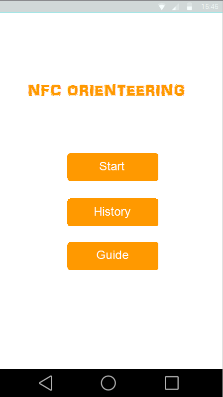
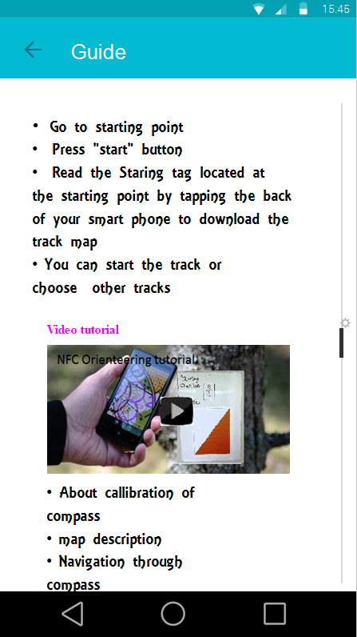
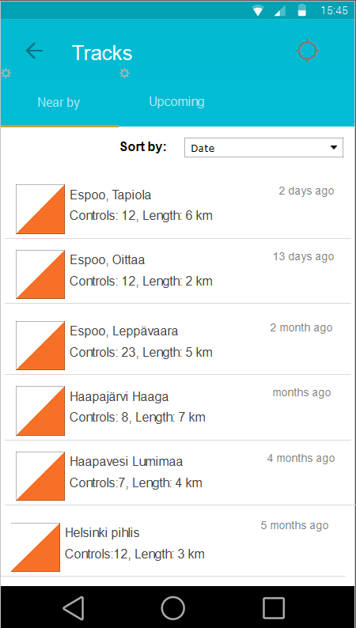

User Experince evaluation and redesign of NFC orienteering app




NFC orienteering application is a digital version of traditional orienteering sports. Orienteering is a sport in which orienteers needs skills to orient path using map and compass by pass control points of the track. The most popular and old orienteering is the foot orienteering but this sports have other types such as; Car orienteering, Mountain bike orienteering, Ski-orienteering, and Trail orienteering. The NFC orienteering application has two components, one is android application which is for participants use, and the other side is web server mainly used for organizer to organize the orienteering event.